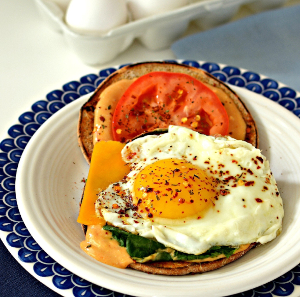

Cajun Egg Sandwich

Description
The perfect fried egg sandwich with just the right amount of spice.
Ingredients
- 1 tablespoon butter
- 1 egg
- 1 slice Cheddar cheese
- Mayonnaise to taste(or 1 teaspoon)
- Mustard to taste(or 1 teaspoon)
- Ketchup to taste(or 1 teaspoon)
- Cajun seasoning to taste(or 1 teaspoon)
- 1 dash hot pepper sauce
- 2 slices white bread, toasted
- 1 lettuce lead
- 1 slice tomato
Steps
- Melt butter in a skillet over medium-low heat
- Crack egg into the skillet and cook until egg is white on the bottom layer and is firm enough to flip, 2 to 3
minutes
- Flip egg, trying not to crack the yolk
- Place Cheddar cheese on top of egg and cook until cheese is melted and egg is cooked to desired doneness, 2 to
5 minutes
- Spread mayonnaise, mustard, and ketchup into both bread slices and season with Cajun seasoning and hot pepper
sauce. Add lettuce and tomato to 1 bread slice; top with egg-cheese. Sprinkle more Cajun seasoning on egg
- Pour any remaining butter from skillet over egg and top with second piece of bread, creating a sandwich